Im WBG wurde nicht nur unterrichtet — hier wurde gewohnt und gelebt. Collagen und Berichte erzählen davon.
↓ SCROLLEN
Collage
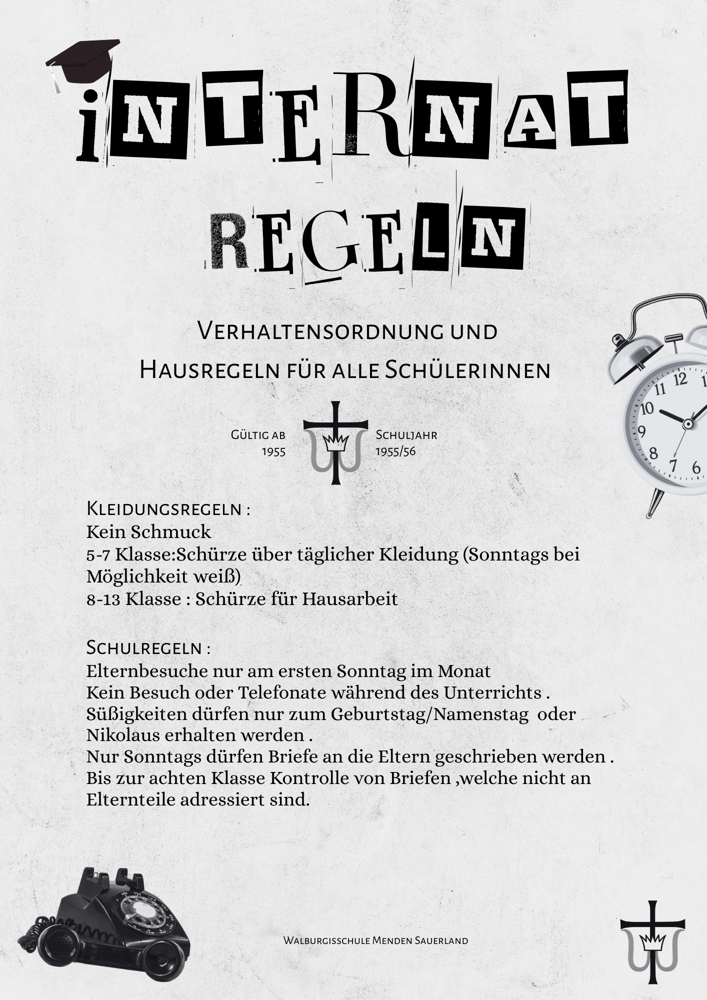
Schulleben in der Vergangenheit
Schulleben in der Vergangenheit · Rundgang 1
Das Untergeschoss
1931 Untergeschoss: Im Untergeschoss befanden sich zahlreiche Räume für Wäschezubereitung. Besonders sieht man die Spuren der damaligen Zeit anhand des heutigen Bücherkellers, in welchem man immer noch die Treppenstufen des damaligen Wassertretbeckens erkennt.
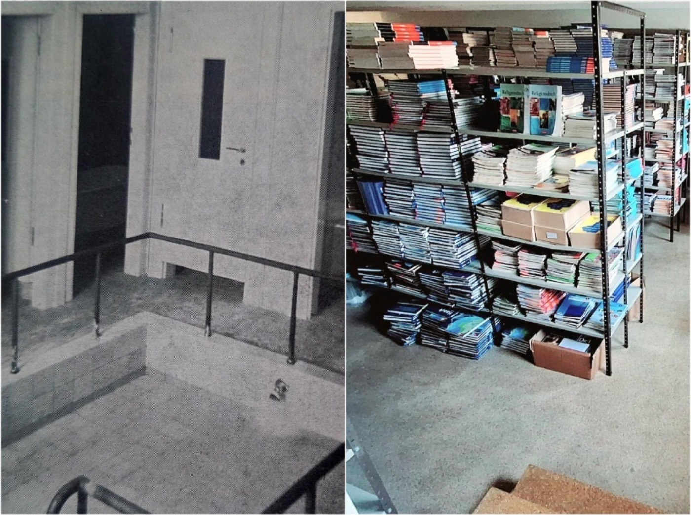
Im Vergleich zu heute befanden sich die Lehrküche, die Küche und das Esszimmer auf der rechten Seite, während in der heutigen Cafeteria ein Kindergarten war.
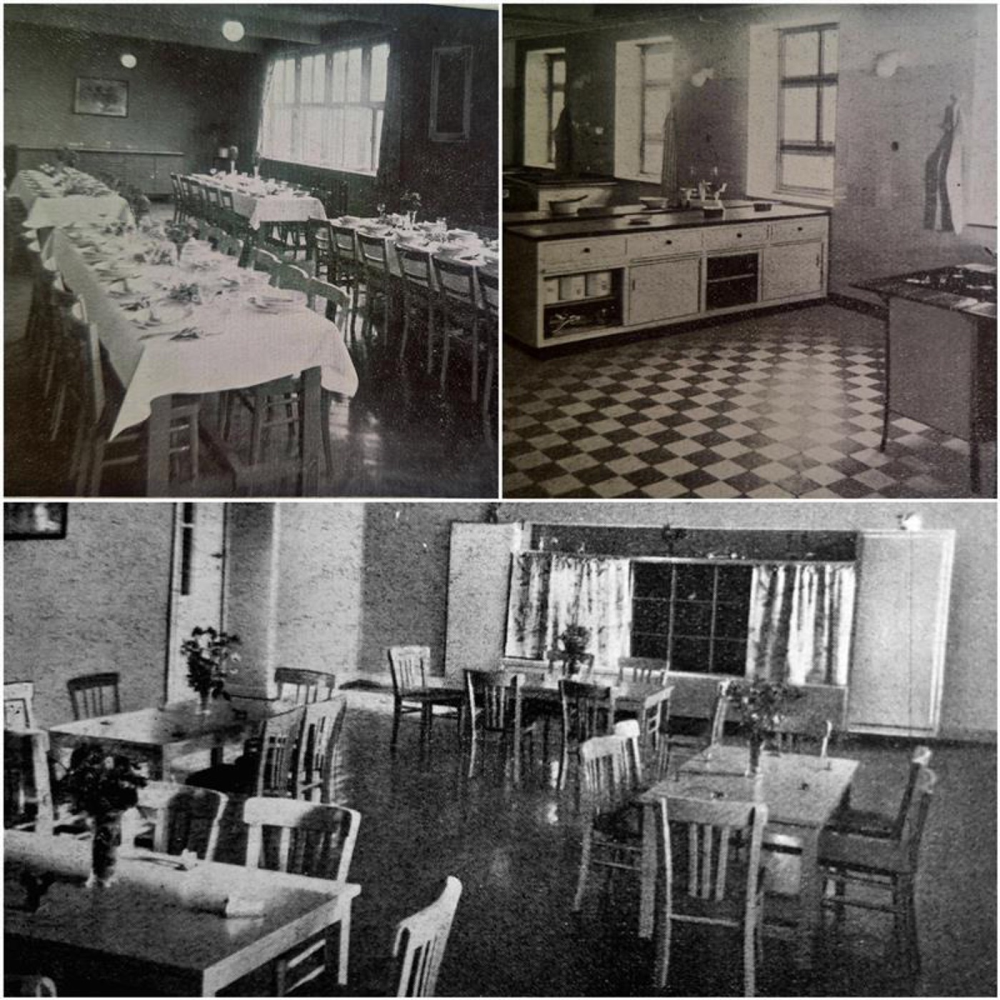
1960 Untergeschoss: Zu dieser Zeit entstand ein Film- und Fernsehraum in der heutigen Cafeteria, während der Kindergarten ins heutige Oberstufenhaus zog. Außerdem wurde Musik im Untergeschoss unterrichtet.
Später: 1980 verpflegte unsere Schulgemeinschaft Obdachlose mit Gerichten in der Nähe der Küchen. Außerdem wurde der Musikunterricht in den Fachtrakt verlegt und aus dem Film- und Fernsehraum wurde die Cafeteria. Heutzutage befinden sich im Untergeschoss außerdem die Büros der Realschule sowie das Sekretariat.
Schulleben in der Vergangenheit · Rundgang 2
Die Aula
1931 Aula: Zu dieser Zeit diente die Aula hauptsächlich als Turnhalle, die Umkleidekabinen waren im Keller und mit einer heute noch sichtbaren Klappe hinter der heutigen Bühne abgetrennt.
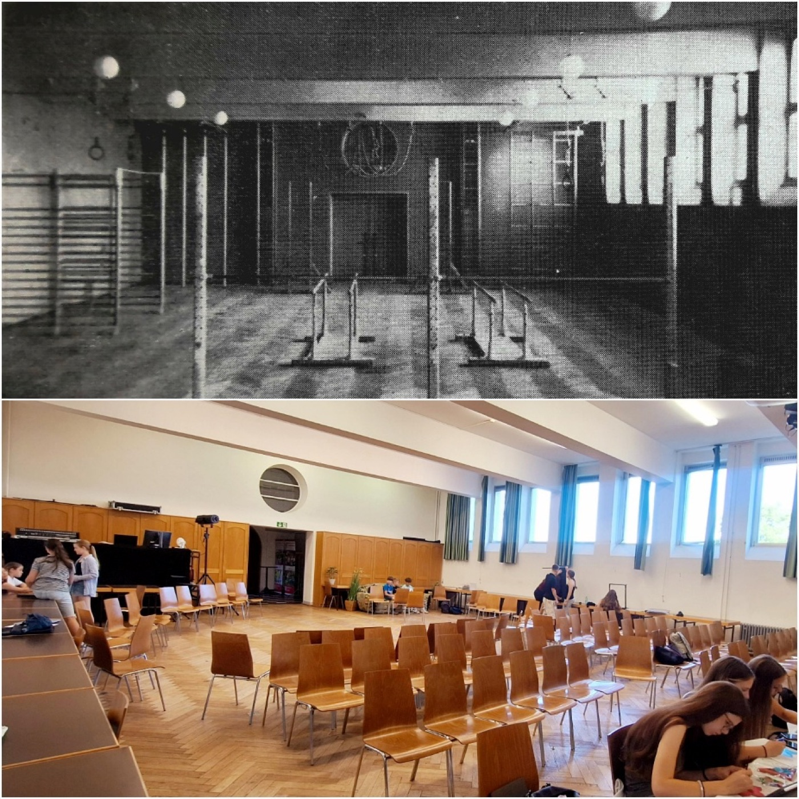
Außerdem wurden dort auch Literaturvorführungen und andere Versammlungen veranstaltet, die Schule warb sowohl mit eigenen Umkleidekabinen für die Schauspielenden als auch mit einer großen Garderobe für Gäste.
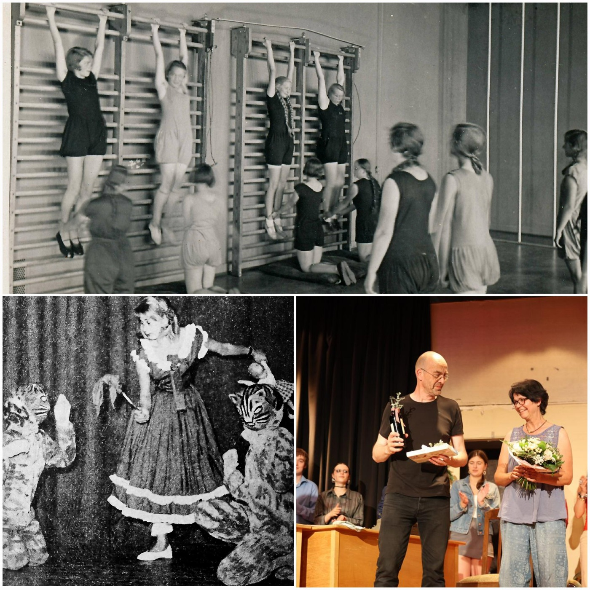
1960: Später wurde auch teilweise der Musikunterricht in den heutigen Stühlelagerraum verlegt. Heute: Heutzutage wird die Aula ausschließlich für Veranstaltungen, Literaturunterricht und Klassenarbeiten genutzt und der Sportunterricht findet mittlerweile in der Turnhalle statt.
Schulleben in der Vergangenheit · Rundgang 3
Erdgeschoss – 200ter-Flur
Erdgeschoss – 200ter-Flur: 1931 befanden sich in diesem Geschoss die Unterrichtsräume der Unter- und Mittelstufe. Neben den Türen wurden Vitrinen zum Ausstellen von Schülerwerken angebracht. Die sich dort befindenden Klassenräume hatten blaue Bänke.
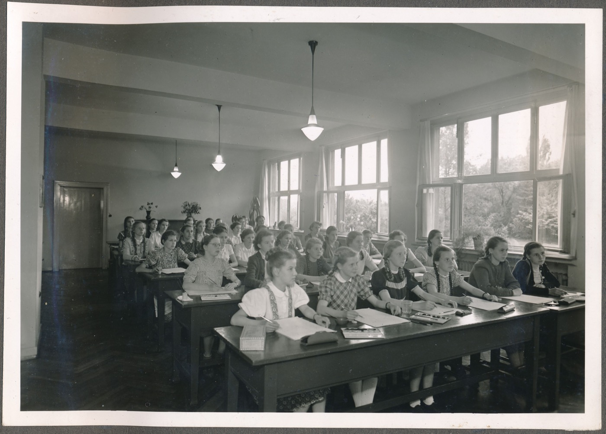
Außerdem gab es hier ein Konferenzzimmer und die Fachräume, also ein Bio-, ein Physik- und ein Chemieraum für Experimente, sowie ein Sammlungsraum. Der Eingang und somit auch das Sekretariat befanden sich auf dieser Etage, da außen am Gebäude eine Treppe direkt zu dieser Etage führte. Auch heute sieht man noch den bunten Fußboden und die Vitrinen, beide denkmalgeschützt. Es sind hier heute Klassen- und Kursräume untergebracht. Die Fachräume befinden sich heute im zwischenzeitlich gebauten Fachtrakt.
Schulleben in der Vergangenheit · Rundgang 4
1. Obergeschoss – 300ter-Flur
1. Obergeschoss – 300ter-Flur: 1931 befand sich hier ein Handarbeitszimmer, ein Zeichenzimmer, ein Kartenraum, ein Aufenthalts- bzw. Wohnraum für die Schülerinnen und ihr Esssaal. Zu diesem und zur Teeküche führte ein Lastenaufzug. Außerdem fand man in dieser Etage das Lehrerzimmer, ein Krankenzimmer und einen Schlafsaal für einige der Schwestern.
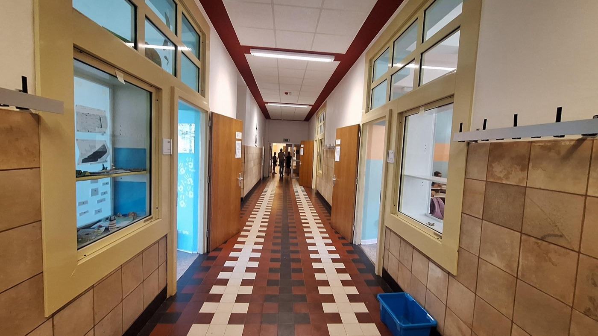
Die Walburgisschule war bis 1975 eine reine Mädchenschule, sie umfasste ein Mädchengymnasium für ein wissenschaftliches Abitur, eine Frauenoberschule mit vertiefenden Fächern der Hauswirtschaft und eine Haushaltungsschule. Zu dem praktischen Teil der Ausbildung an der Haushaltungsschule gehörte sogar eine Säuglingsstation. Die erste Schulleiterin war Schwester Paula Hammer, welche die Schule in den 1930er Jahren leitete. 1960 wurde der Ess- und Wohnraum der Schülerinnen umgewidmet für die Ordensschwestern.
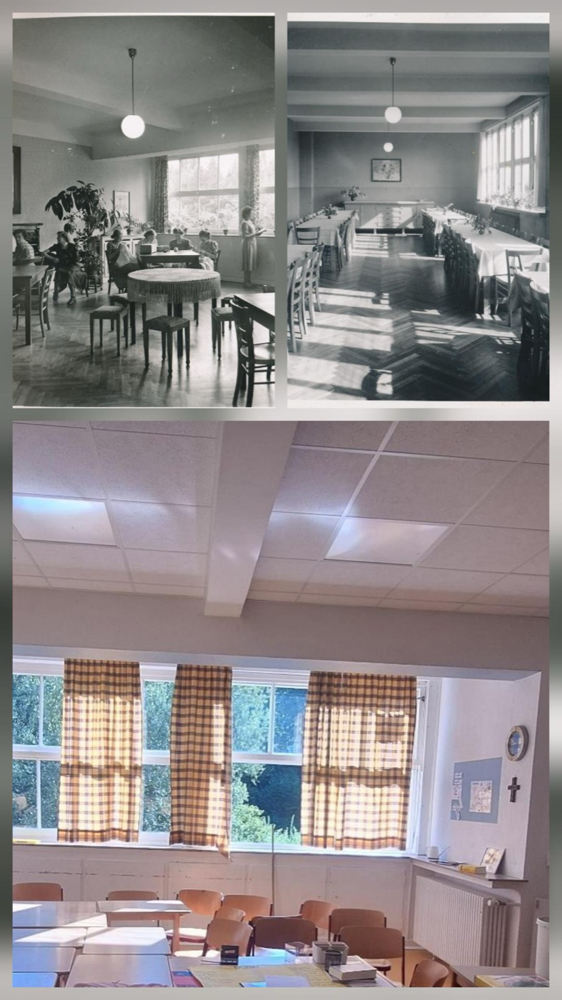
Heute sind im 1. Obergeschoss Klassenräume, ein Kunstraum und das Lehrerzimmer.
Schulleben in der Vergangenheit · Rundgang 5
2. Obergeschoss – 400ter-Flur
2. Obergeschoss – 400ter-Flur: 1931 waren hier die Schlafräume der Ordensschwestern mit Gemeinschaftsbädern und anderen Aktivitätsräumen.
Vermutlich wurde kurz darauf der Flur zweigeteilt, wobei die eine Hälfte die Schlafräume der Schwestern und die andere Hälfte die Schlafräume der Internatsschülerinnen, der sogenannten Pensionärinnen, beinhaltete. 1960 waren es dann insgesamt Schlafräume für die Schülerinnen.
Heute sind im 2. Obergeschoss Klassenräume untergebracht.
Schulleben in der Vergangenheit · Rundgang 6
3. Obergeschoss – 500ter-Flur
3. Obergeschoss – 500ter-Flur: 1931 wurden hier Schlafsäle und Schlafräume für die Internatsschülerinnen, der sogenannten Pensionärinnen, eingerichtet. Als später auch Schlafräume im 2. Obergeschoss eingerichtet wurden, kamen hier die Pensionärinnen der Mittel- und Oberstufe unter. Neben 4 Klavierzimmern und dem Gemeinschaftsbad befanden sich auf diesem Flur insgesamt 12 Schlafzimmer, in denen zu zweit oder zu dritt geschlafen wurde. Diese waren in leuchtenden Farben, rot, gelb, rosa oder blau, mit gelben Möbeln eingerichtet.
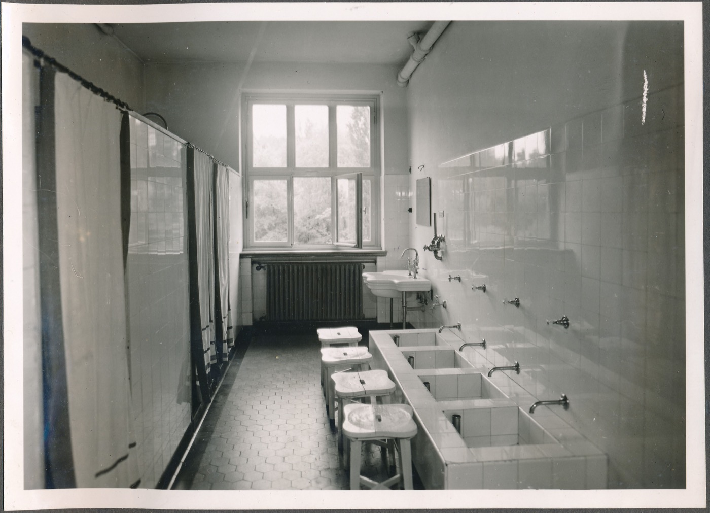
Die Zimmertüren hatten Glasfenster, damit bei Nachtruhe kontrolliert werden konnte, ob bei den Schülerinnen noch Licht brannte. Allgemein gab es klare und teils strenge Regeln. Es durfte kein Schmuck getragen werden, die Unterstufe musste über die tägliche Kleidung eine Schürze tragen, sonntags eine weiße Schürze. Bei Hausarbeiten mussten auch die älteren Schülerinnen eine Schürze tragen. Elternbesuche durften nur am ersten Sonntag im Monat erfolgen, während des Unterrichts waren Besuche oder Telefonate nicht erlaubt. Briefe an die Eltern durften nur sonntags geschrieben werden, und Briefe an andere Personen wurden bei Schülerinnen bis zur 8. Klasse kontrolliert. Süßigkeiten durften nur am Namenstag, Geburtstag und Nikolaustag verschickt werden.
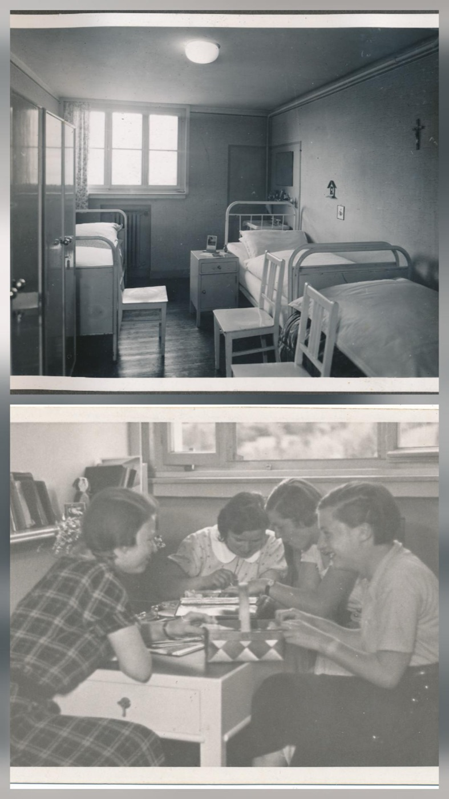
1960 wurden hier die Schlafräume und das Gemeinschaftsbad der Schwestern eingerichtet, außerdem befand sich hier eine Teeküche als Ergänzung zur Hauptküche im Keller. In den 1970er Jahren war die Zahl der im Gebäude lebenden Schwestern mit rund 30 am größten. Sie unterrichteten Schüler und vermittelten christliche Werte.
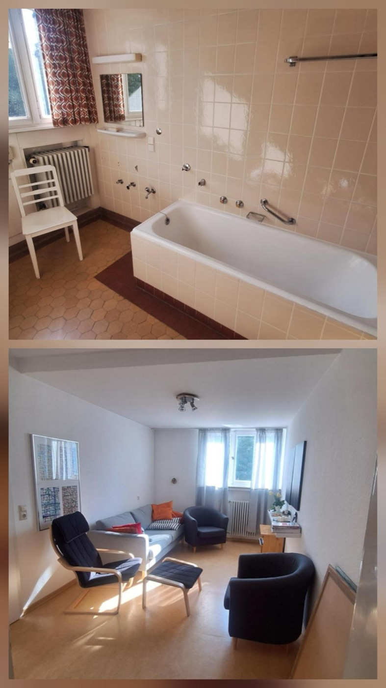
Heute sind hier Arbeitsräume für die Oberstufe, Arbeits- und Ruheräume für die Lehrkräfte und einige Büros untergebracht.
.png)
.png)
.png)
.png)